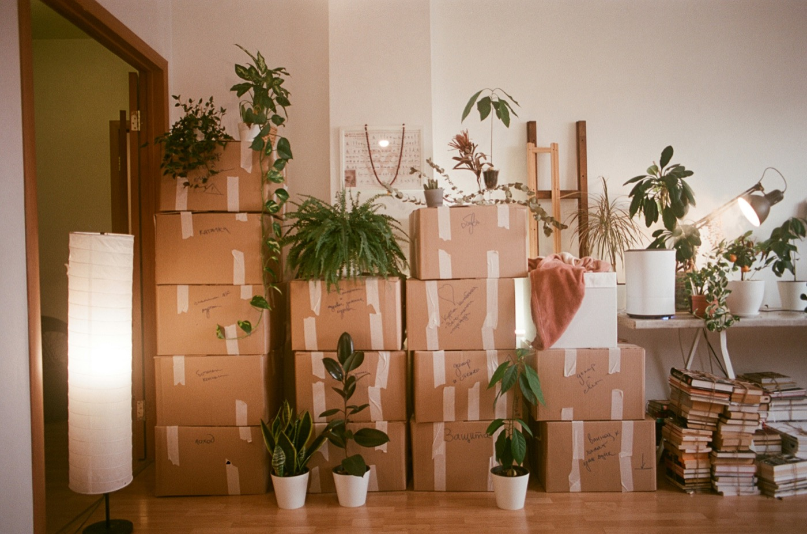

Nuestros Servicios
Desde una sola habitación hasta una propiedad completa, ofrecemos los servicios que las familias necesitan para atravesar esta transición con confianza.

Limpieza y Despeje
Trabajamos habitación por habitación, con paciencia y respeto, para despejar el hogar de las pertenencias que ya no necesitan quedarse — asegurándonos de que nada importante se pase por alto.
- Despeje de toda la casa o de una sola habitación
- Clasificación en categorías de conservar, donar, vender y desechar
- Entrega responsable de donaciones y reciclaje
- Manejo cuidadoso de artículos sentimentales y frágiles
- Coordinación con empresas de ventas de patrimonio o subastas cuando sea necesario
Organización
Una vez que sabemos qué se queda, le damos orden. Catalogamos documentos importantes y objetos de valor, agrupamos recuerdos para los familiares, y dejamos el hogar más fácil de recorrer.
- Clasificación y etiquetado de pertenencias por categoría o destinatario
- Localización y organización de papeleo y documentos importantes
- Identificación y resguardo seguro de objetos de valor y herencias familiares
- Creación de un inventario para referencia familiar o registros patrimoniales
- Empaque de recuerdos para envío o recolección familiar
Inventario y Documentación
Para muchas familias, especialmente al liquidar un patrimonio, contar con un registro claro, escrito y fotográfico de lo que hay en el hogar es tan importante como despejarlo. Creamos un inventario detallado, habitación por habitación — anotando muebles, objetos de valor y colecciones, con fotos y notas sobre su estado — para que albaceas, abogados y familiares trabajen con la misma información precisa. Suele ser el primer paso antes de decidir qué conservar, vender, donar o heredar, y también puede servir como documentación para seguros, trámites sucesorios, o una distribución equitativa entre los herederos.
- Inventario escrito habitación por habitación de muebles, objetos de valor y pertenencias
- Documentación fotográfica con notas de estado y ubicación
- Identificación de artículos que podrían beneficiarse de una tasación profesional
- Registros organizados para seguros, trámites sucesorios o administración de patrimonio
- Un resumen que se puede compartir con albaceas, abogados o familiares
Coordinación de Mudanza
Ya sea que las pertenencias vayan a un familiar, una bodega de almacenamiento, o un nuevo hogar al otro lado de la ciudad, coordinamos todos los detalles para que usted no tenga que lidiar con múltiples proveedores.
- Empaque y transporte seguro de pertenencias
- Programación y coordinación de mudanzas profesionales
- Envío de recuerdos a familiares fuera del estado
- Contratación o coordinación de bodegas de almacenamiento
- Logística de entrega para donaciones y ventas
Preparación del Hogar
Una vez que el hogar está despejado, ayudamos a prepararlo para lo que sigue — ya sea una venta, un anuncio de renta, o la entrega de llaves a un nuevo propietario.
- Limpieza profunda y retoques ligeros
- Coordinación de reparaciones menores y servicios de mantenimiento
- Ambientación ligera para que el hogar luzca mejor
- Coordinación con agentes inmobiliarios y administradores de propiedades
- Recorrido final para confirmar que el hogar está listo para habitar o vender
¿No sabe por dónde empezar?
Cada propiedad es diferente. Cuéntenos su situación y le recomendaremos la combinación correcta de servicios para su familia.
Solicitar una Consulta Gratuita